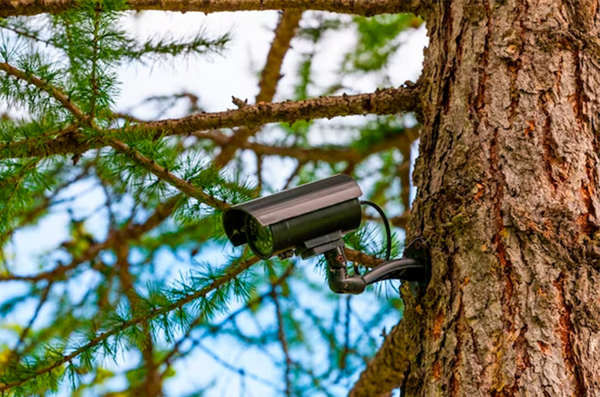

En FireAlert, nos dedicamos al desarrollo de sistemas avanzados para la detección temprana de incendios forestales. Nuestra misión es ofrecer soluciones innovadoras que permitan a las autoridades competentes actuar de manera preventiva y eficaz frente a las amenazas de incendios, salvaguardando así el medio ambiente y las comunidades en riesgo. Varios equipos de bomberosy otras instituciones ya utilizan nuestros sistemas, descubre quienes son:
Descubrelos
Estos son los actuales casos que se estan tratando tras haber sido detectados por nuestro sistema:
En Galicia, un incendio desatado por una tormenta eléctrica arrasó bosques centenarios en la zona rural de la provincia de Lugo, dejando a más de 500 personas sin hogar y afectando gravemente la biodiversidad del área.
En Castilla y León, un incendio provocado por negligencia humana consumió vastas extensiones de pastizales y pequeñas aldeas en la provincia de Ávila. Más de 200 personas fueron evacuadas y numerosos animales de granja perdieron su hábitat.
En el País Vasco, un incendio forestal causado por actividades ilegales de caza arrasó los montes cercanos a la ciudad de Vitoria-Gasteiz. Cerca de 3000 hectáreas de vegetación fueron destruidas, amenazando la calidad del aire en áreas urbanas.
En Valencia, un incendio iniciado por una colilla mal apagada devastó las reservas naturales en las afueras de la ciudad de Valencia. Más de 1000 personas fueron evacuadas de sus hogares y la fauna local sufrió pérdidas significativas.
En Andalucía, un incendio provocado por condiciones meteorológicas extremas arrasó vastas extensiones de cultivos y olivares en la provincia de Jaén. La rápida propagación del fuego obligó a evacuar a más de 1500 residentes y generó graves daños económicos en la región.
Para mas información en cada uno pulse sobre el nombre de la comunidad autonoma o en los marcadores del mapa.
Servicos 24/7

Sistemas de
Detección 24/7
Utilizamos tecnología de punta, incluyendo sensores pasivos y activos, así como cámaras especializadas capaces de detectar la radiación infrarroja y el movimiento, para identificar incendios con gran velocidad y una precisión del 90% o más. Nuestro sistema esta elaborado tal que sea escalable y adaptable a diversas zonas y condiciones climáticas, asegurando una detección eficiente en cualquier momento y situación.
Atención por
Teléfono 24/7
Nuestro servicio de detección de incendios está disponible las 24 horas, los 7 días de la semana, para brindarte la seguridad que necesitas en todo momento. Con tecnología de vanguardia y un equipo experto siempre listo para responder, estamos aquí para detectar cualquier emergencia y actuar de inmediato. Protege lo que más importa con nuestra atención al teléfono sin interrupciones. Tu seguridad es nuestra prioridad.
Aviso directo
a las autoridades
Implementamos algoritmos avanzados de procesamiento de datos y generación de alertas inmediatas a las autoridades, permitiendo una respuesta rápida y coordinada. Estamos comprometidos con la innovación continua y la excelencia operativa, trabajando codo a codo con expertos en incendios forestales y autoridades locales para hacer frente a esta amenaza global con la tecnología más avanzada y efectiva disponible.